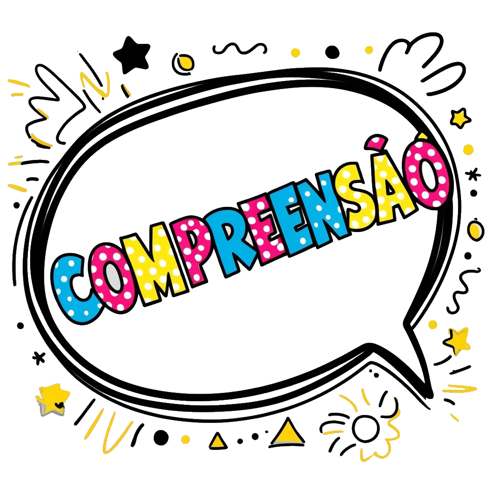

Curso de Inglês

Compreensão Auditiva e Leitura
Este tópico foca no desenvolvimento das habilidades de escuta e leitura através de exercícios e atividades práticas.
- Exercícios de escuta com diálogos simples:
Atividades para melhorar a compreensão auditiva.
- Escuta de diálogos básicos do cotidiano:
- Diálogos sobre cumprimentos e apresentações.
- Conversas sobre compras e pedidos em restaurantes.
- Diálogos sobre rotinas diárias e hobbies.
- Prática com áudios e vídeos:
- Exercícios de escuta com áudios curtos.
- Vídeos com legendas em inglês para acompanhamento.
- Atividades de preenchimento de lacunas:
- Completar frases e diálogos enquanto ouvem os áudios.
- Questões de compreensão auditiva:
- Perguntas sobre o conteúdo dos diálogos.
- Atividades de verdadeiro ou falso.
- Escuta de diálogos básicos do cotidiano:
- Leitura de textos curtos e fáceis:
Atividades de leitura para iniciantes.
- Leitura de pequenas histórias e contos:
- Textos com vocabulário básico e frases simples.
- Histórias ilustradas para facilitar a compreensão.
- Artigos e notícias fáceis:
- Textos informativos sobre temas do dia a dia.
- Notícias simplificadas para estudantes de inglês.
- Atividades de interpretação de texto:
- Perguntas sobre o conteúdo dos textos.
- Resumos e paráfrases das leituras.
- Exercícios de vocabulário:
- Identificação e definição de palavras-chave nos textos.
- Atividades de correspondência de palavras com definições.
- Leitura de pequenas histórias e contos: